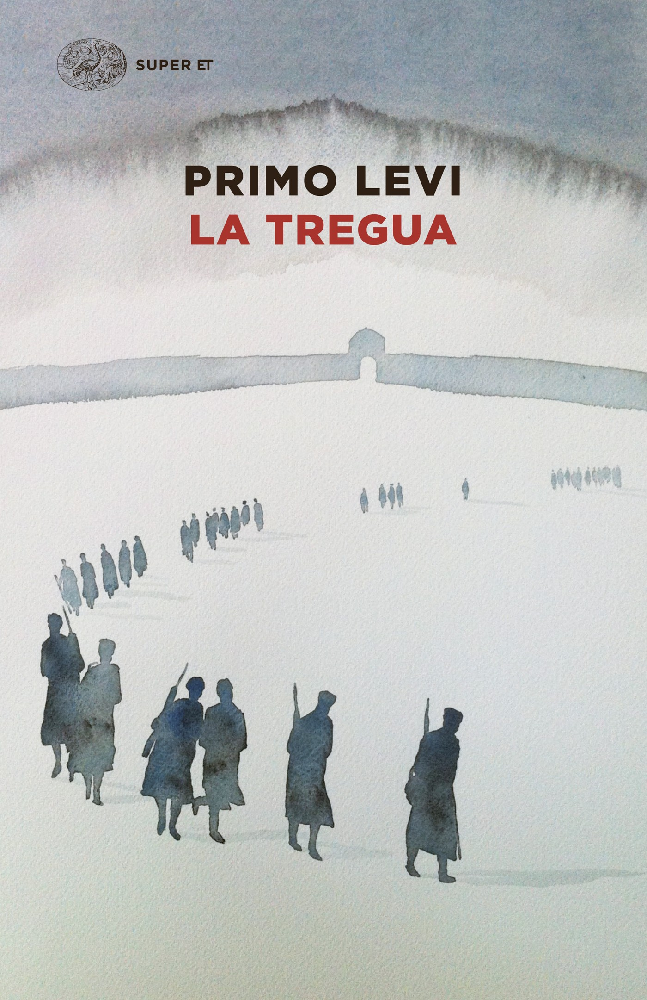
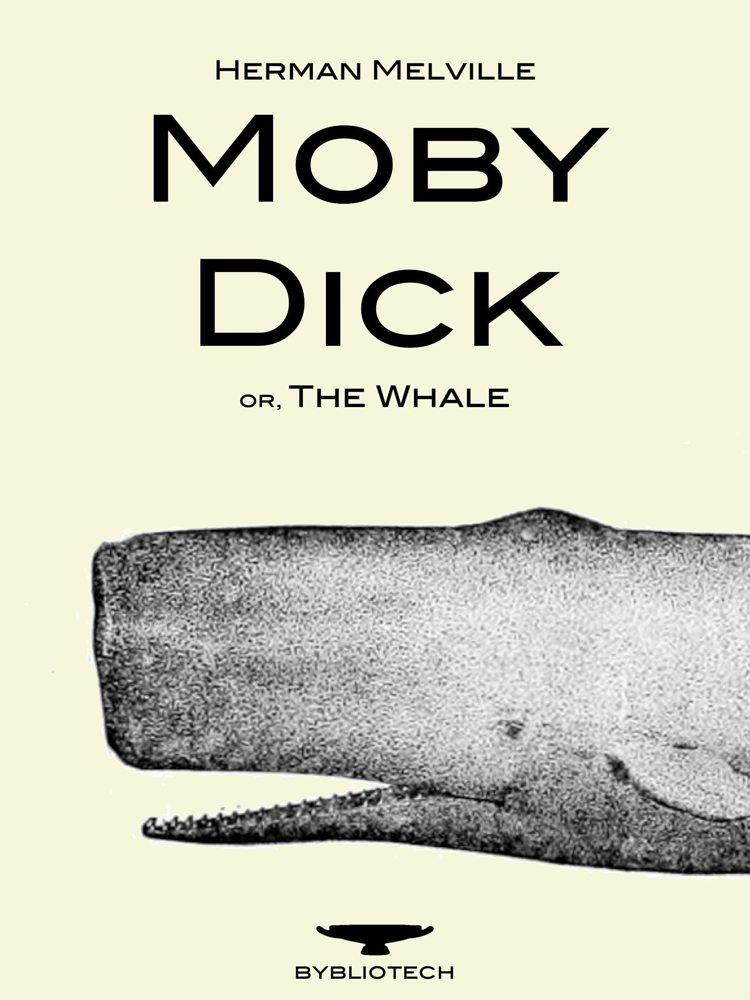
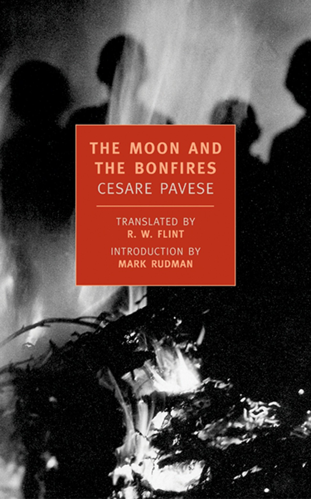

Diego Castellaro
Student @ Le Wagon
I've just learnt how to make things italic or bold!
I'm typing from hereSome good reads
|  |
The Truce by Primo LeviThe author's odyssey through Europe, in the attempt of reaching his home in the wake of WW2. |
|  |
Moby Dick by Herman MelvilleSailor Ishmael's narrative of the obsessive quest of Ahab, captain of the whaling ship Pequod, for revenge on Moby Dick, the white whale that on the ship's previous voyage bit off Ahab's leg at the knee. |
|  |
The Moon and The Bonfires by Cesare PaveseThe protagonist has returned to his home town in the years immediately following the Second World War. He left twenty-five years earlier and had made his fortune in the United States. Returning to his home town, he finds many of the same smells and sights that filled his youth, but he also finds a town and its inhabitants that have been deeply changed by war and by the passage of time. |
About this page
This page has been coded in the first day of the front end module @ Le wagon!